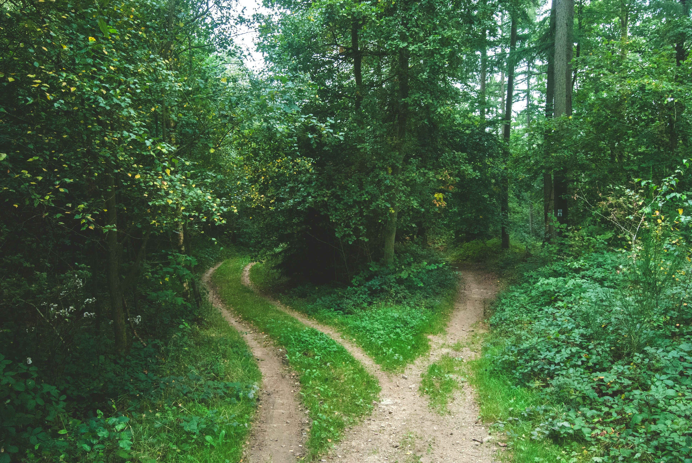

<!DOCTYPE html>
<html></html>
<html lang="en">
  <head>
    <meta charset="UTF-8">
    <meta name="viewport" content="width=device-width, initial-scale=1.0">
    <meta name="description" content="A modern CSS page">
    <meta name="generator" content="Eleventy v1.2" />
    <title>The Road Not Taken</title>
    <link rel="stylesheet" href="https://unpkg.com/open-props">
    <link rel="stylesheet" href="https://unpkg.com/open-props/normalize.min.css">
    <link rel="stylesheet" href="css/main.css">
    <link rel="apple-touch-icon" sizes="180x180" href="images/apple-touch-icon.png">
    <link rel="icon" type="images/png" sizes="32x32" href="images/favicon-32x32.png">
    <link rel="icon" type="images/png" sizes="16x16" href="images/favicon-16x16.png">
    <link rel="manifest" href="/site.webmanifest">
  </head>
  <body>
  <h1>The Road Not Taken</h1>
  <p>A Poem By Robert Frost</p>
  <p>
<a href ="https://unsplash.com/photos/two-roads-between-trees-u0vgcIOQG08">
  Photo by Jens Lelie on Unsplash
</a></p>

  

  <br>
  <p>Two roads diverged in a yellow wood,</p>
  <p> And sorry I could not travel both</p>
  <p>And be one traveler, long I stood</p>
  <p>And looked down one as far as I could</p>
  <p>To where it bent in the undergrowth;</p>
  <br> 

  <br>
  <p>Then took the other, as just as fair</p>
  <p>And having perhaps the better claim,</p>
  <p>it was grassy and wanted wear;</p>
  <p>Though as for that, the passing there</p>
  <p>Had worn them really about the same,</p>
  <br> 

  <br>
  <p>And both that morning equally lay</p>
  <p>In leaves no step had trodden black</p>
  <p>Oh, I kept the first for another day!</p>
  <p>Yet knowing how way leads on to way,</p>
  <p>I doubted if I should ever come back.</p>
  <br> 

  <br> 
  <p>I shall be telling this with a sigh</p>
  <p>Somewhere ages and ages hence:</p>
  <p>Two roads diverged in a wood, and I,</p>
  <p>I took the one less traveled by,</p> 
  <p>And that has made all the difference.</p>
  <br>

<footer class="footer">
<p>© Paige Cornell, 2024 </p> 
</footer>
</body>
</html>